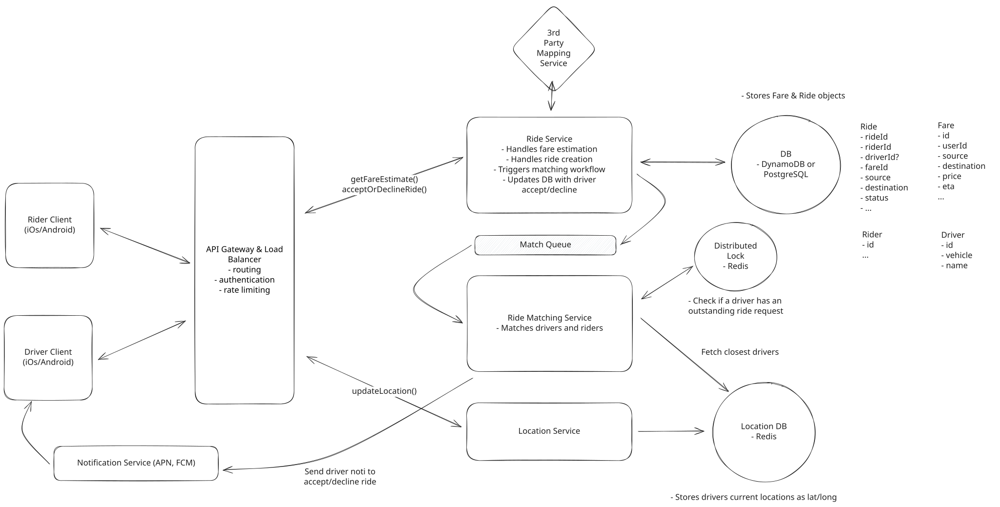

Low-Level Design in a Hurry
Introduction
Learn low level design fast. All the essentials needed to pass a low level design interview, built by FAANG hiring managers and staff engineers.
Low-level design interviews test your ability to structure code for a self-contained problem. You'll be given a system - a connect-four game, an elevator controller, a parking lot system, etc. - and asked to design the classes, interfaces, and relationships that make it work.
The focus of the interview is on code organization: What are the right objects? How do they interact? What methods do they expose? Can the design be extended without rewriting everything?
You may hear this called "Object-Oriented Design" (OOD) instead of "Low-Level Design" (LLD). They're the same interview, just a different name. If your recruiter mentions either, this is the guide for you.
What is this guide?
This is a practical guide to low-level design interviews, written by interviewers and engineers with decades of experience in big tech. It’s focused on modern, practical strategies for performing well in real interviews, rather than how software design appears in a classroom.
Most LLD content online reads like a textbook. It teaches abstract principles, exhaustive pattern catalogs, and heavily academic versions of object-oriented design. Much of it is outdated, and almost none of it is optimized for making fast, correct decisions in an interview.
We deliberately avoid outdated overfitting to classical OOP. Modern production systems favor composition over inheritance, simple state over deep hierarchies, and pragmatism over pattern worship. You’ll still learn the patterns that matter, but only the ones that actually show up in real interviews and real codebases.
LLD interviews vary widely across companies, regions, and levels. Rather than trying to cover every edge case, we teach to the mode. You’ll learn the approach that works across the widest range of interviews, with clear callouts where expectations meaningfully differ.
We start by defining a Delivery Framework that we suggest you use to structure your interview.
We then provide a refresher on the basics to help you get back up to speed on the fundamentals of object-oriented design quickly. This includes:
Finally, we provide a (ever-growing) collection of Problem Breakdowns where we walk through how we'd tackle common LLD problems from the perspective of an interviewer.
We firmly believe you need to practice to ensure you're comfortable the day of your actual interview. A common failure mode for candidates is to have consumed a lot of material but stumble when it comes time to actually apply it. For this our guide includes worked solutions to common problems as well as our Guided Practice which walks you through the steps of an LLD interview with personalized feedback.
What is the difference between Low-Level Design and System Design?
Despite the similar names, these interviews have almost nothing in common. System design is about architecture at scale. You talk through traffic, storage, consistency, caching, sharding, and the tradeoffs behind each choice. The goal is to show how you think about large systems that serve real users. It is usually done on a shared whiteboard where you sketch boxes and arrows to represent a distributed system. There is no coding in system design and almost no discussion of classes, methods, or interfaces because the focus is on architecture, not implementation.
For low-level design, on the other hand, you are defining objects, modeling data, and shaping the interactions that make a single feature or service work. Instead of boxes and arrows, you work through classes, methods, relationships, and state transitions.
A simple example makes the difference obvious. If the prompt is to design a ride sharing backend, a system design interview has you sketch the major services on a whiteboard. You draw a matching service, a pricing service, a location service, a datastore, a queue, and show how data flows between them. You talk through scaling each piece, handling load spikes, keeping data consistent, and making the system reliable.

Uber System Design Example
In a low-level design interview, instead of drawing services, you write the code structure for a single part of the system, usually in pseudocode. For that same ride sharing example, you might design the Trip class, the TripState enum, the PricingCalculator interface, and how these objects collaborate. The discussion is about methods, relationships, data models, and state transitions, not how to scale the fleet to millions of users.
The final implementation of a low-level design interview might look closer to something like this:
Python
from enum import Enum
from dataclasses import dataclass
class Trip:
def __init__(self, id: str, rider: "User", pickup: "Location", dropoff: "Location"):
self.id = id
self.rider = rider
self.driver = None
self.pickup_location = pickup
self.dropoff_location = dropoff
self.state = TripState.REQUESTED
self.fare = 0.0
def assign_driver(self, driver: "Driver"):
if self.state != TripState.REQUESTED:
raise ValueError(f"Cannot assign driver to trip in state: {self.state}")
self.driver = driver
self.state = TripState.DRIVER_ASSIGNED
def start_trip(self):
if self.state != TripState.DRIVER_ASSIGNED:
raise ValueError(f"Cannot start trip in state: {self.state}")
self.state = TripState.IN_PROGRESS
def complete_trip(self, calculator: "PricingCalculator"):
if self.state != TripState.IN_PROGRESS:
raise ValueError(f"Cannot complete trip in state: {self.state}")
self.fare = calculator.calculate_fare(self)
self.state = TripState.COMPLETED
def cancel_trip(self):
if self.state == TripState.COMPLETED:
raise ValueError("Cannot cancel completed trip")
self.state = TripState.CANCELLED
This is an illustrative example, don't treat this as a complete implementation.
System design is the map. Low level design is the blueprint for a building on the map.
Variants of Low-Level Design Interviews
LLD interviews follow the same core idea everywhere, but the format shifts enough that you should know the big patterns depending on where you are interviewing.
The first major difference is whether the interview expects pseudocode or real code. US Big Tech leans toward partial code in a real language. You write class definitions, method signatures, and a bit of logic in something that looks like Java, Python or C++, even if you are not compiling it. For interviews in India or Asia, the expectation is closer to structured pseudocode. You outline the classes and interactions without committing to exact syntax. In our breakdowns, we stick to pseudocode for clarity, but include full implementations in common languages at the end for reference.
Design patterns, like the Factory or Strategy patterns, are another point of variation. At Big Tech, interviewers care more about the reasoning than the vocabulary. You only bring up a pattern when it naturally applies. Smaller and mid-size companies in India and Asia ask about patterns more directly and are more likely to expect you to call them out. You do not need to force them into your answer, but you should recognize when a common pattern is the cleanest fit.
Ambiguity also varies by region. Requirements tend to be vaguer in India and Asia. You are expected to ask a few grounding questions, extract the constraints, and drive the solution. US interviews are slightly more defined, but the same principle holds. Interviewers want to see how you establish scope before you start designing.
These differences are meaningful enough that we want you to be aware, but they should not have a significant impact on your preparation. In order to know exactly what your target company is expecting, just ask! Your recruiter and/or interviewer will be happy to give you a clear answer.
Interview Assessment
While each company uses its own scoring rubric, LLD interviews tend to evaluate the same core skills. Interviewers want to see whether you can turn a small, well-scoped problem into a clean, maintainable code structure. They are testing your ability to decompose a system, express clear classes, and design code that a real team would want to work with.
Problem Analysis
Interviewers start by checking whether you understand what you are building. Strong candidates extract the key entities and responsibilities, ask a few clarifying questions to lock down scope, and frame the problem before touching code. What interviews don't want to see is you jumping right into code without understanding the problem thoroughly first.
Class Design
Once the problem is scoped, interviewers look at how you design the main classes and how they interact. This includes choosing the right responsibilities, shaping method signatures, defining clear ownership, and keeping boundaries clean. Good class design makes the rest of the interview feel natural. Weak class design makes everything downstream harder.
Code Quality
This combines the fundamentals of good object-oriented design with the structure and hygiene of real code. Interviewers want to see encapsulation, well-managed state, sensible use of composition or inheritance, and clear separation of concerns. They also look at naming, consistency, and dependency direction. Even in pseudocode, the goal is code that reflects disciplined thinking rather than ad hoc decisions.
Extensibility and Maintainability
Most interviews include a small follow-up requirement. The goal is to see whether your design can absorb new functionality without being rewritten. Strong candidates build flexible structures with clean boundaries. The focus is on practicality. Interviewers reward designs that adapt easily, not designs that anticipate every possible future.
Communication
Interviewers want to see a clear narrative, thoughtful reasoning, and the ability to adjust when the interviewer probes. A structured explanation often signals confidence and maturity more than perfectly written code. This one should be easy, just talk out loud and walk them through your thought process as you go.
Feedback and Suggestions
We update this guide continually based on your feedback. If you have questions, comments, or suggestions, feel free to leave them below.